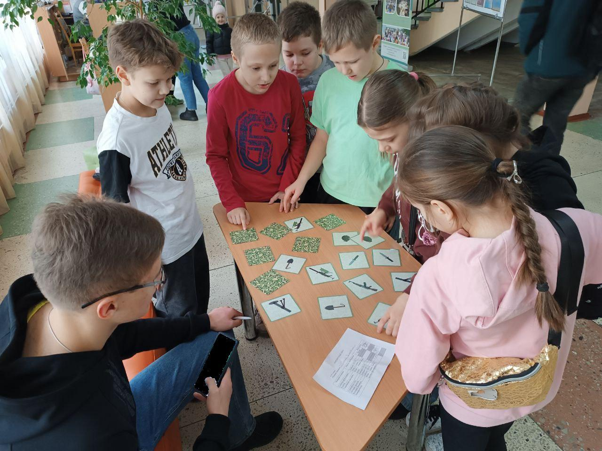
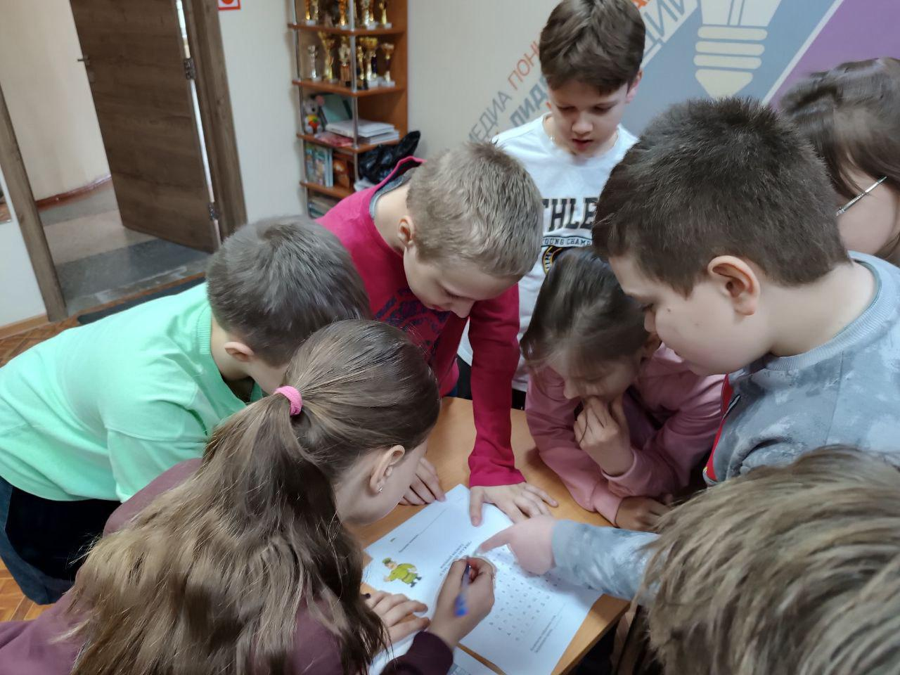
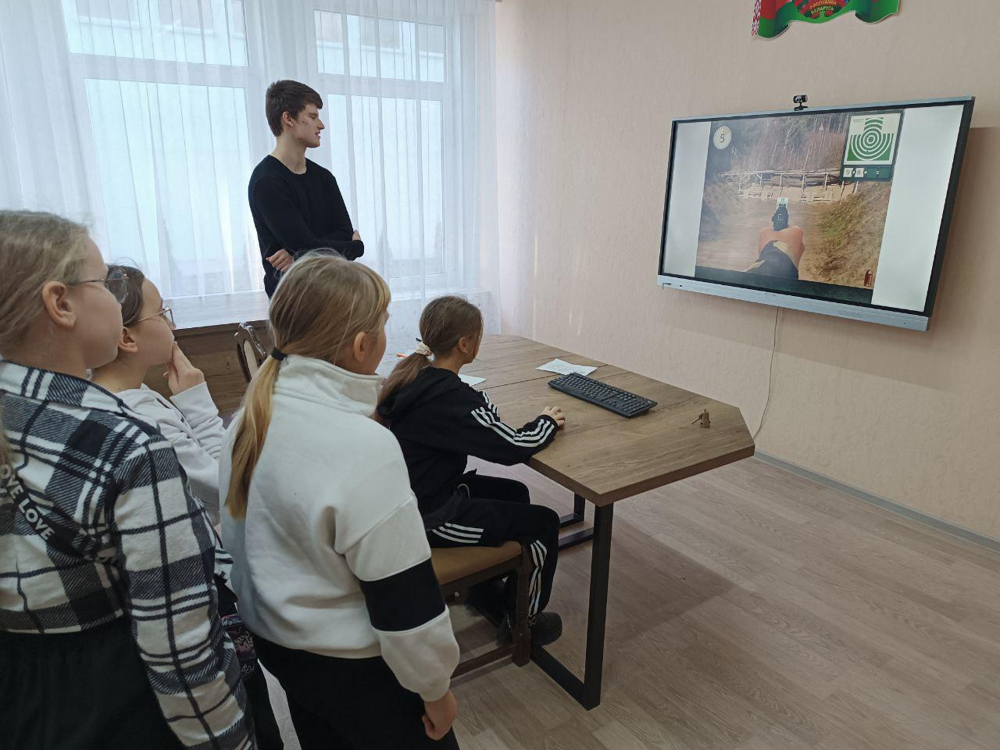
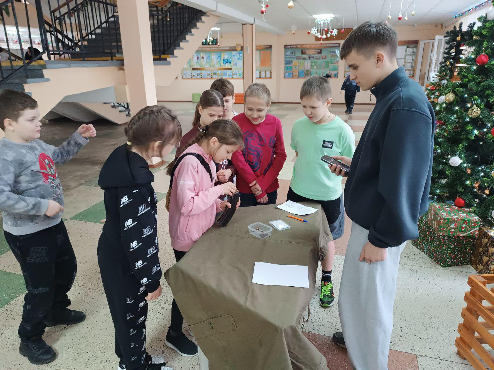
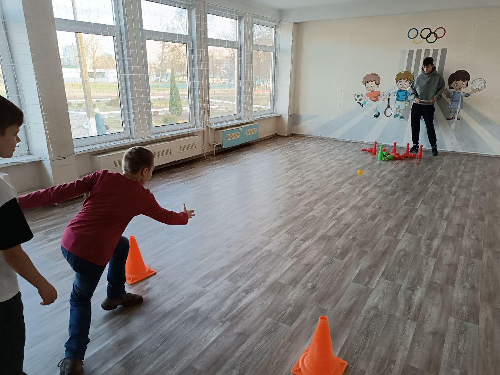
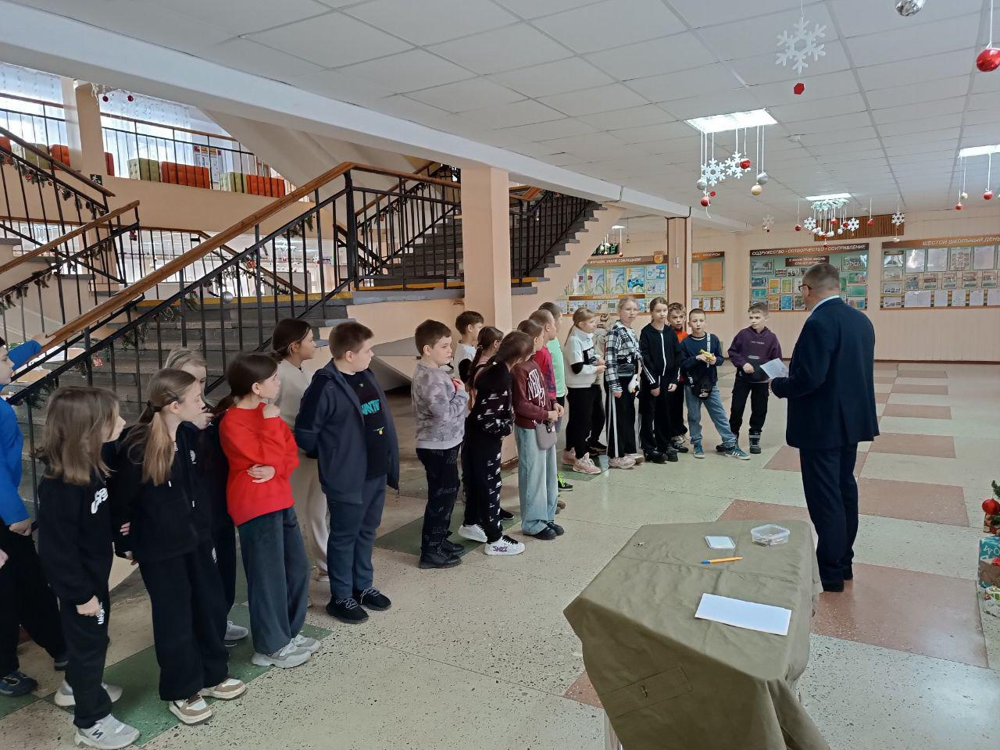
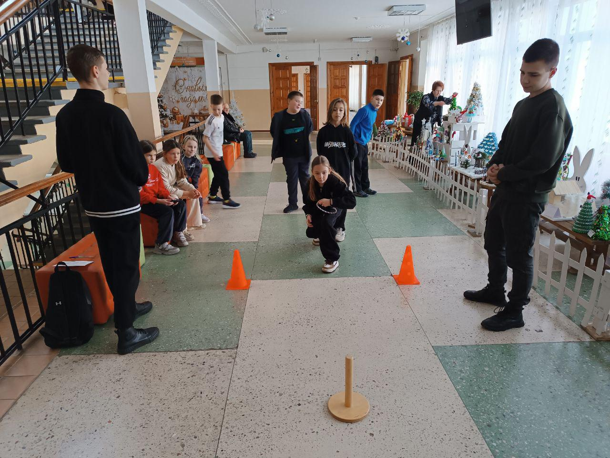
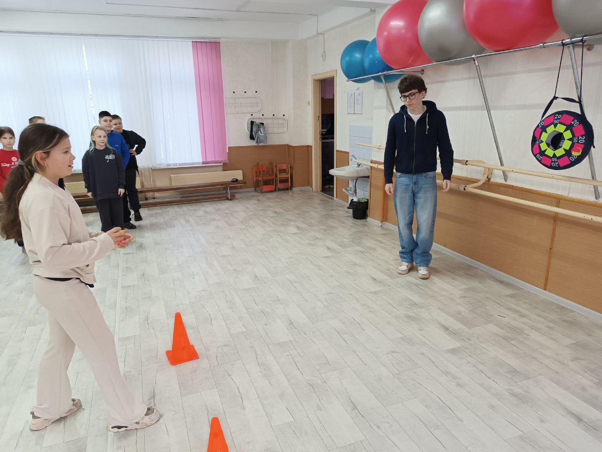

ЮНЫЙ СНАЙПЕР
ЮНЫЙ СНАЙПЕР Развлекательный турнир «Юный снайпер» прошел 13 декабря с учащимися 4-х классов. Ребятам предстояло пройти 7 испытаний, из которых 5 практических и 2 теоретических: «Стрельба в интерактивном тире из пистолета Макарова», «Снаряжение магазина автомата Калашникова», «Снайпер-артиллерист», «Ковбой», «Метание гранаты», «Армейский мемори-блиц», «Военный филворд». В организации турнира приняли участие волонтеры из числа учащихся 11-х классов. Каждое испытание они оценивали по балам и времени.


Необходимо отметить, что все участники турнира показали высокие результаты и справились со всеми испытаниями. Вместе с тем, места распределились следующим образом: 1 место заняла команда 4 «Г» класса, 2 место – с незначительным отрывом завоевала команда 4 «Д» класса, бронзовым призером стали ребята 4 «Б» класса.



Итог турнира – хорошее настроение и интересно проведенное время. Все участники награждены сладкими подарками.


